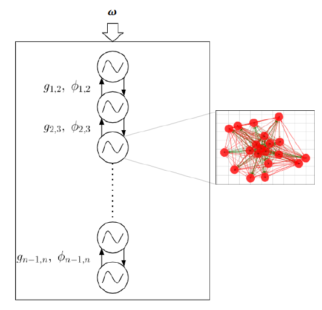

Major Projects
Design and Analysis of neural controllers for locomotion
Semester Project, Biorobotics Laboratory (EPFL)In this project, I developed and simulated control mechanisms for locomotion in animals as well as robots using biological models of neural networks.
The following video gives a glimpse of the lamprey swimming using the framework
 The main idea for such locomotion models is a Central Pattern Generator (CPG), a dynamical system capable of stable oscillatory behaviors without any phasic input (Ijspeert (2008)). Such controllers are typically designed using abstract oscillator models. The network connectivities are also often calculated using optimization routines such as genetic algorithms. The Neural Engineering Framework (Eliasmith and Anderson (2004)) provides an opportunity to develop CPGs using a population of neurons with analytical formulations of the network weights and robust stability guarantee.
Another part of the project was analysis of locomotion controllers using nonlinear analysis tools such as numerical continuation (Allgower and Georg (2003)). This is a widely used technique to find equilibria, limit cycles as well as bifurcation points of a nonlinear dynamical systems. In the context of locomotion, primary focus is on limit cycle solutions. Coco continuation toolbox (Dankowicz and Schilder (2013)) was used to study a rhythm generation mechanism and characterize the dynamical regimes.
Link to the report